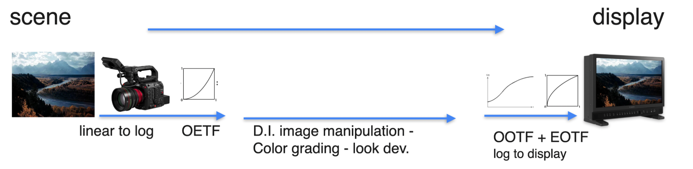
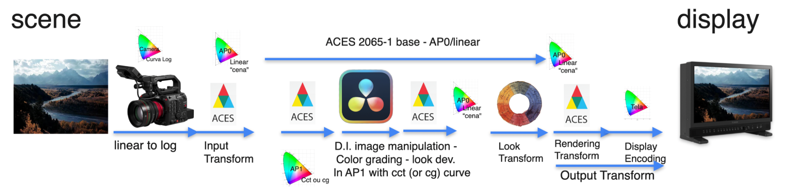
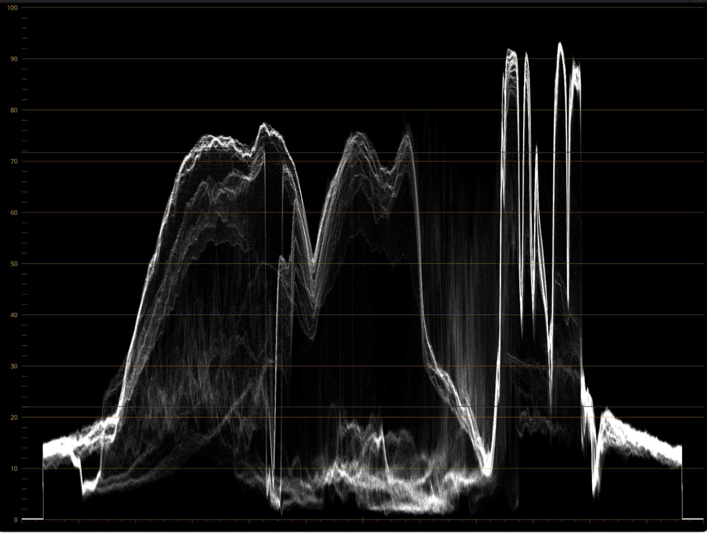
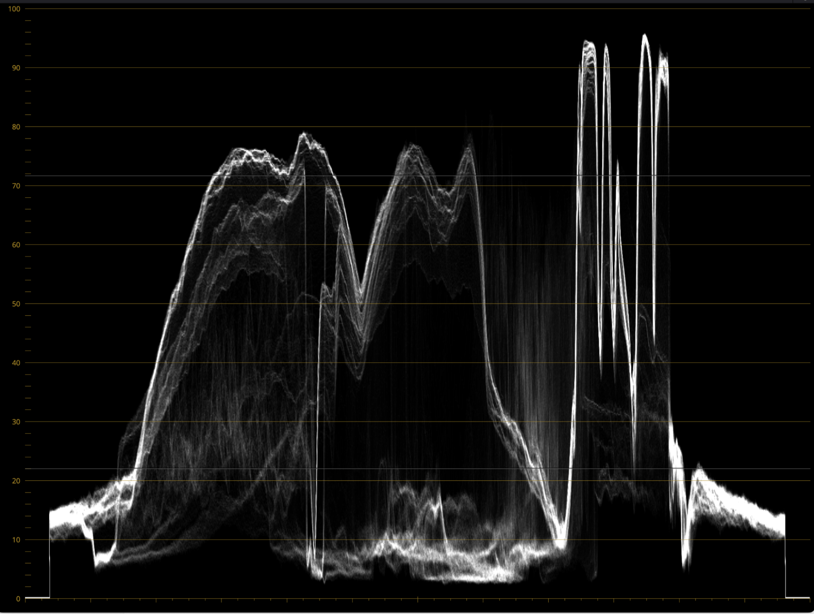
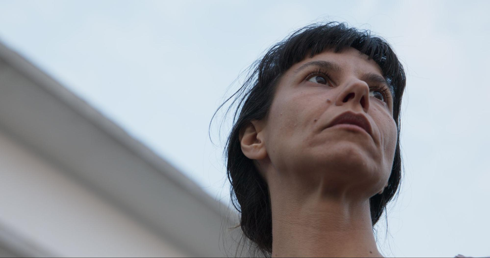
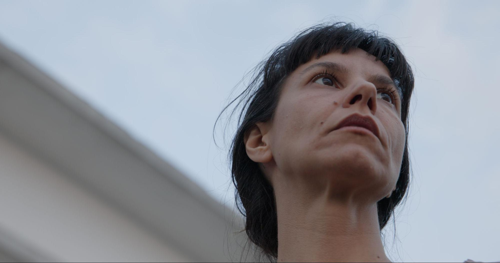
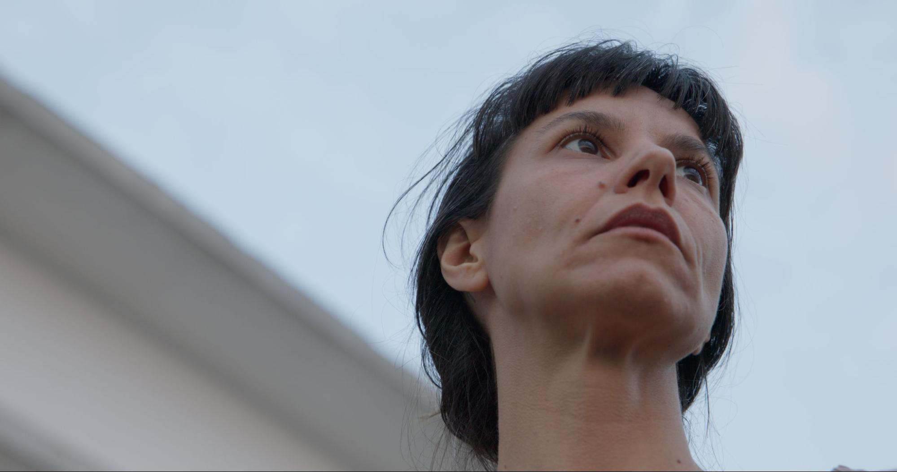
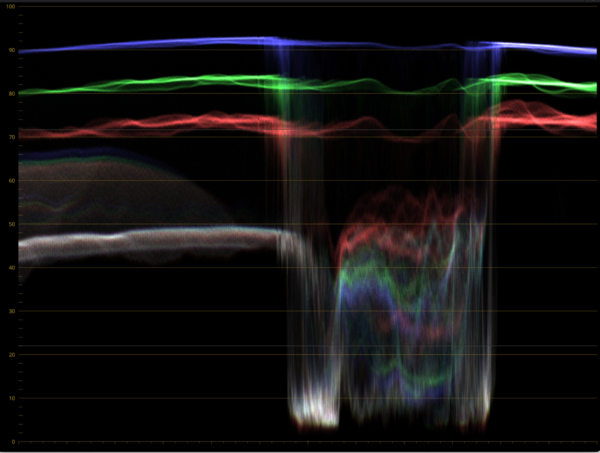
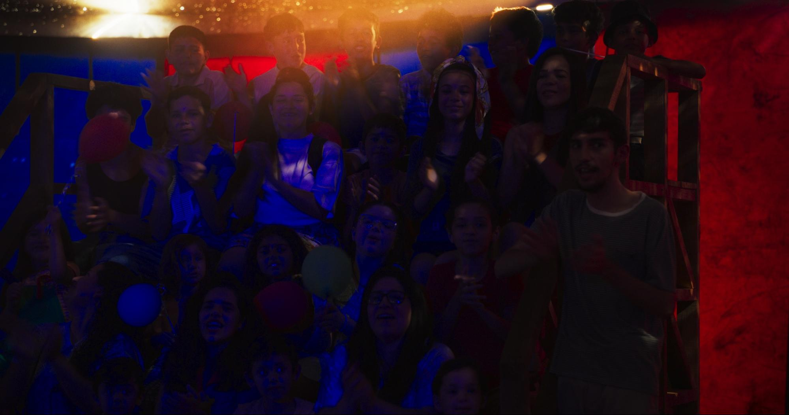
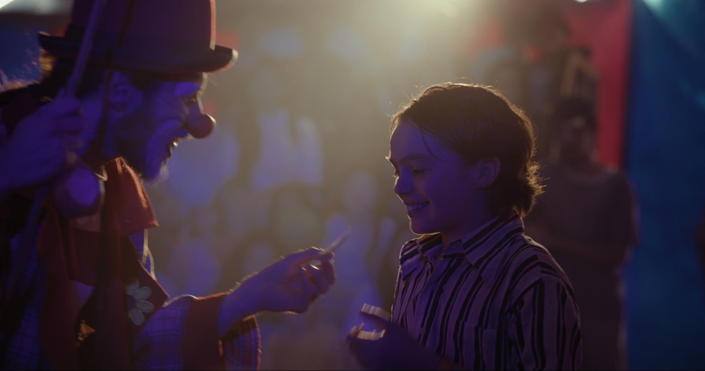

ACES 2.0: A Gateway to Look Creation Beyond Traditional LUTs
The initial idea for this article was quite simple: to test the new ACES 2.0 (The Academy Color Encoding System). At the same time, I was doing some work for Canon, testing and producing content for their latest cinema camera, the Canon EOS C400. So I decided to test the new ACES using images from this new camera. However, while doing so, I came across more important questions than those merely technical aspects of a color encoding system update. What emerged was a clear possibility of crafting characteristics I envision for my projects in a way that is both more experimental and more consistent, with more predictable results.
For several years, I have been working with earlier versions of ACES. This update promises to correct some issues with color rendering and should consolidate and popularize these workflows across a broader range of applications. Up to version 1.3, there was an issue for me with the direct image output from ACES: the default transform looked too contrasty and skin tones were less pleasing than other color space transforms methods. So, when workflows required me to use ACES — due to multi-camera setups, CGI elements, or various VFX processes — it always demanded me an extra research to achieve a result that I could otherwise reach faster using DaVinci Resolve's native color space transforms or even the manufacturer LUTs. Although I enjoy the look development process, it didn't always achieve uniform results like those obtained from testing lenses or filters, which consistently impart specific characteristics to the image.
Choosing a color management method, far from being a homogeneous or automatic process, affects the final image in different ways. On the path from visualizing an idea to the final image, we can run tests with the colorist, create one or more show LUTs (based on pre-researched creative intent); in productions with a DIT, we can test signal manipulations on set, and later all the work through the DI. In analog workflows, we test different negatives and photochemical processes, and once the pipeline is defined (and trusting the lab's accuracy), the final image is relatively secure — much like lens selection. In digital workflows, the "looks" created during pre-production have always seemed limited and dependent on many later adjustments. Ultimately, the safest route ends up being the manufacturer's color science, which at least ensures consistency across most photographic scenarios.
At first glance, following this logic, it would seem that the closest digital process to the analog workflow is camera choice (with its inherent color science). However, studying digital processes shows us that camera choice does not dictate image characteristics. On the contrary, with competent color management, differences between cameras relate more to practical concerns, such as ergonomics, dynamic range, exposure latitude, than to final image aesthetics. It's quite rare today for anyone to identify which camera was used on a final graded project.
I appreciate the research processes on image construction, such as Steven Yedlin's. In his widely referenced essay “On Color Science for Filmmakers”, he poses a central question:
"Can we as filmmakers identify, isolate and understand any of these underlying attributes so that we can manipulate them meaningfully for ourselves, or are we forever relegated to the status of shoppers; browsing for pre-packaged solutions and then wearing the badge of brand allegiance to the one we select.?" Yedlin, 2017 — https://www.yedlin.net/OnColorScience
He answers this himself:
"[...] the substantial part of the perceptual look comes from the mathematical preparation of the image for display and not from the camera format.
This means that if we can identify the attributes that matter to us, we can control and sculpt them precisely and individually... regardless of camera type." Yedlin, 2017 — https://www.yedlin.net/OnColorScience
His article goes on to compare attributes similar to those found in photochemical film, which interests me more for its methodological approach, where he finds ways to manipulate image attributes consistently and reliably on set — beyond Arri, RED, or Canon's default color science. When I see his tests producing radically different results from different technical transforms of the same scanned frame, I recognize a familiar digital experience: each color space transform - from camera intermediate space ("log”) to display - results in significantly different outcomes.
With ACES, beyond the flexibility to work with different equipment and processes, I am drawn to the technical possibility of working in a photometric scene-referred space. Its mathematical base operates in a linear logic (like how sensors interpret light). One problem with LUTs is that they operate as a 3D matrix in intermediate color spaces, replacing RGB values from point to point. Therefore, depending on lighting and color saturation, a show LUT developed in a specific situation may fail to reflect the intended creative look in others. Moreover, LUTs don't account for the necessary adaptations across different display technologies, in an era where many display gamuts and luminance curves coexist.
Despite these issues, until version 1.3, ACES still had shortcomings, as noted. This brings me back to what excited me about ACES 2.0: the upgraded "rendering transform," which now provides a better default starting point with lower contrast and more convincing skin tones, even without any manipulation.
For those unfamiliar with ACES, it helps to briefly outline the transformation chain from scene light to final display image in both traditional and ACES-based workflows.
Non-ACES pipeline:

- OETF (Opto-Electronic Transfer Function): Converts linear scene light into an intermediate camera space (e.g., Canon Cinema Gamut / Canon Log 2).
- EOTF (Electro-Optical Transfer Function): Converts this intermediate signal to display-referred light values, often using a LUT.
- OOTF (Opto-Optical Transfer Function): Bridges the perceptual differences between scene and a given display.
There are some issues in this workflow:
- Lacks interoperability with different cameras and VFX, CGI, virtual production or any other processes.
- Tends to apply manipulations after display transform, reducing adaptability to other display technology.
- When it applies LUTs to perform as EOTF + OOTF, it handles contrast and color in a too simple mathematical terms, limiting control.
ACES pipeline
In a very simplified way we would have:

- Instead of the simple OETF (Opto-Electronic Transfer Function) — which converts linear scene values into a camera’s intermediate log encoding — the ACES workflow introduces an Input Transform. This transform maps the camera’s log signal into ACES, a linear, scene-referred color space defined by extremely broad primaries known as AP0.
- In this wide-gamut space, different components of the audiovisual pipeline can interoperate and exchange image data while preserving the original photometric intent.
- At the end of the ACES pipeline, rather than a sequential combination of OOTF (Opto-Optical Transfer Function) and EOTF (Electro-Optical Transfer Function), ACES uses a Rendering Transform followed by Display Encoding. Together, these form the Output Transform, which adapts the scene-referred signal to a perceptual model of light and encodes it into the target display’s color space. The Rendering Transform is among the most significant components in the pipeline. Unlike the simpler OETF, OOTF, or EOTF, it involves complex tone mapping operations that account for both the luminance and chromatic volume of the original scene, adjusting them to the output display at the final stage of processing.
However, this wide color space—technically designated as SMPTE ST 2065-1, also referred to as ACES 2065-1 or simply "ACES space"—encompasses a gamut larger than the visible spectrum. While it provides a high-fidelity reference for image processing, its vast scale can hinder practical color manipulation in common software tools and complicate interchange with simpler pipelines.
To address this, ACES defines a secondary working space called AP1, which is similar in size to Rec.2020. Alongside it, a working tone curve called ACEScct (comparable to a log curve) enables more intuitive image manipulation in a software like DaVinci Resolve. In VFX and CGI workflows, a variant known as ACEScg is used—based on AP1 but preserving linear luminance math.

This leads us to a complete ACES workflow structure as follows:

Note that there is a possibility to create a modification called "Look Transform" that operates mathematically in AP0/linear, ensuring its validity when applied back to other situations due its scene-referred logic.
Canon EOS C400 Tests
I began by testing a scene with significant low light elements, because it seemed to me initially that ACES 2.0 had less noise in dark areas. I compared ACES 1.3, ACES 2.0, DaVinci CST, and Canon's own LUT.






In this first test, shadows were similarly handled in ACES 2.0, CST, and Canon LUT. Highlights varied: the brightest part of a wall hit 86% IRE in ACES 1.3, 80% in CST/LUT, and 77% in ACES 2.0—the least contrasty.
In a second test, with more saturated warm tones and a slightly underexposed 18% gray reference:


ACES 2.0 lifted shadows slightly (gray card at 21-22% IRE vs. 20-21% in 1.3). The white patch was at 48% in 1.3, 45% in 2.0, increasing separation between shadow and midtones. Buildings lit by early morning sun appeared more saturated in 1.3 and CST.


Waveform analysis (RGB parade) showed:
- Canon LUT: most saturated (blue up to 93% IRE).
- ACES 2.0: least saturated (blue at 87% IRE).

Subjectively, ACES 2.0 felt more neutral and pleasing without any grade. CST and Canon LUT looked fine in contrast but oversaturated shadows. ACES 1.3 was least convincing, overly contrasty and with poor skin tones.
In a more extreme example, with deep shadows and saturated blue light (a difficult condition for sensors), I updated a project originally graded in ACES 1.3 to 2.0 with the same correction:








Here, I opted for an RGB parade waveform to clearly visualize the saturation differences across each color channel. Notice that the wall in the lower-left corner sits at a neutral tone right around 50% IRE. Visually, we can already see the difference in saturation in the skin tones and the blue of the sky (just moments before sunrise). On the waveform, the Canon LUT shows the widest separation between color channels, indicating higher color saturation. In both the LUT and ACES 1.3, the blue channel peaks at 93% IRE, compared to 89% IRE in the CST and 87% IRE in ACES 2.0.
Quite subjectively, with no manipulation applied, ACES 2.0 strikes me as a more neutral and pleasing alternative. The DaVinci Resolve CST and the LUT show good contrast levels, but with exaggerated colors, particularly in the shadows. ACES 1.3, on the other hand, delivers the weakest response, resulting in an overly contrasty image and unconvincing skin tones.
I chose a radical example here, where most of the critical image information sits in very dark zones alongside saturated blue light sources (at the edge of the gamut)—which is, as a rule, the most challenging scenario for photographic sensors. In this case, the film had already been graded using an ACES 1.3-based pipeline, and the goal was to update it to ACES 2.0 while preserving the original creative intent.


In both images, you can see that although most of the image information sits in very dark zones, the ACES 2.0 transform keeps that data lifted off the 0% IRE floor, whereas in the ACES 1.3 version, a significant amount of information is buried. This is expected, since ACES 1.3, as we have seen, pushes the shadows further down and the highlights further up. However, when trying to fix the issue, I notice that a portion of that information (likely carrying substantial noise) refuses to lift off the baseline of the waveform. While an experienced colorist might find a way to work around this manually, here the solution comes directly from the transform itself.


Tests on Creating Creative Transforms for On-Set Use
In an effort to develop a creative transform (a look) for a film, cinematographers, colorists, and DITs have been researching ways to manipulate color space transforms to achieve a more uniform response than traditional Show LUTs, which have become widespread in cinematography over the past 15 years. Based on tests with ACES 2.0, I believe I have found a path forward for my own work by combining LMTs with native ACES 2.0 transforms. As a reminder, LMTs operate using scene-referred (linear) math within the ACES AP0 color space, paired with a new "JMH" Rendering Transform calculation that separates adjustments of perceived lightness ("J"), perceived colorfulness ("M"), and perceived hue ("H")—somewhat analogous to HSL logic. This means creative transforms should yield a more accurate response regardless of lighting conditions, color science choices, or exposure, both during the color grading process and on set.
Among the tools that interest me in color grading are those that shift color saturation behavior from additive to subtractive logic. A true subtractive color system is effectively impossible on displays, since white on screens is formed additively (by adding the primary colors together). However, certain tools simulate how color saturation behaves in the realm of pigments (rather than light) as well as in photographic film stock—given that to produce positive colors, film uses CMY dyes to compose the image. Thus, a saturated blue is a mixture of cyan and magenta dyes, whereas in an RGB (additive) system, we increase the luminance values of the blue channel while leaving the others unchanged. The beauty of increasing color saturation under subtractive logic is that instead of boosting the luminance of a single RGB channel (blue, in this example), it lowers the luminance of the opposing channels (simulating the addition of pigment).
DaVinci Resolve features a very interesting tool called Film Look Creator. Beyond attempting to emulate specific film stocks (which, as a rule, does not particularly interest me), it allows us to emulate color saturation increases using subtractive logic. This tool can be constrained so that its values translate cleanly into a 3D LUT, and best of all, it can operate in a scene-referred pipeline, follow the timeline color space, or work in linear space. The test here consisted of configuring the tool to operate in linear AP0 space and evaluating how the resulting .clf LUT would behave across varying luminance and chrominance conditions. These choices would not be very effective in a traditional Show LUT—even if built in an intermediate ("log") color space, and far less so in display-referred space.
Let's look at these examples: first, the frame with only the transform from Canon Log 2 to Rec. 709 processed through ACES 2.0; next, with the LMT (.clf) created from the subtractive saturation boost via the Film Look Creator tool; and finally, a second look with an even more aggressive intervention using the same tool, intended to emulate a generic film stock effect:





Regardless of whether the aesthetic result is good or bad, the effects behaved uniformly across vastly different lighting and contrast scenarios. What excites me about this possibility is that it unlocks a type of visual intervention during principal photography that was previously impossible on set, tools that simultaneously operate in scene-referred photometric logic and offer far greater complexity than standard lift, gamma, and gain adjustments. I look forward to the day camera manufacturers adopt native ACES workflows in-camera and allow direct LMT loading. For now, this on-set capability remains restricted to productions with a DIT who can implement a full ACES pipeline.